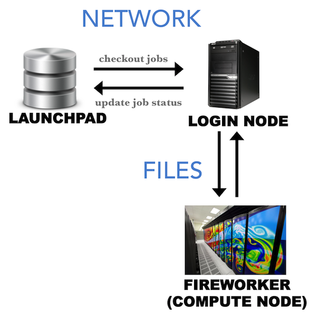

Running FireWorks in “offline” mode on firewalled systems¶
FireWorks typically requires a network connection between the LaunchPad and the FireWorker to operate. The network connection allows the FireWorker to check out a job from the LaunchPad, and subsequently update the server with the status of the job:

Unfortunately, many computing centers employ an internal system of “compute nodes” that cannot access an outside network. The FireWorker is thus blocked from checking out jobs from the LaunchPad (or updating back the LaunchPad with the job status). There exists no way for the compute node to communicate with the LaunchPad. However, if the login node to the computing center can access the network, we can design a system whereby the login node handles all network connections and communicates with the compute nodes by serializing information as files:
This is the offline mode of FireWorks operation. Before using this option, however, it is important to understand that:
- The login node still needs to be able to access the FireWorks database. If you’re not sure, try to run a database query from the login node.
- The login node needs to be able to write files that can be read by the compute nodes, and vice-versa.
- Offline mode can only be used with the reservation mode of the queue launcher, since the login node must checkout and serialize a job in advance of the queue submission starting to run.
- Using FireWorks in offline mode requires more human maintenance than normal mode, and generates extra files for communication within each job. Thus, trying to get a network connection up and running between your FireWorker and LaunchPad should always be your first line of attack.
Part 0: Before trying offline mode:¶
Offline mode comes with many limitations and some additional work/maintenance from the user. Before trying offline mode, check if any of the following will work you:
- contact your computing center to review their security policy to allow connections from your MongoDB server (best resolution)
- host your Mongo database on a machine that you are able to securely connect to, e.g. on the supercomputing network itself (ask a system administrator for help)
- use a proxy service to forward connections from the MongoDB –> login node –> compute node (you might try, for example, `this tool <https://github.com/bakks/mongo-proxy`_).
- set up an ssh tunnel to forward connections from allowed machines (the tunnel must be kept alive at all times you are running workflows)
Part 1: Checkout and submit jobs in offline mode¶
In offline mode, the login node will checkout a job, serialize it to a FW.json file, and put that file in the launch directory. When the compute node starts running the job, it will read the FW.json file to instantiate the Firework and run it using the --offline option of the rlaunch command.
To submit jobs in offline mode:
- First, configure you queue file
my_qadapter.yamlaccording to the instructions in the simple queue tutorial. However, in therocket_launchsection of the file, add the--offlinetag to the end. For example, yourrocket_launchsection of the file might look like:rlaunch -w path/to/myfworker.yaml -l path/to/my_launchpad.yaml singleshot --offline. When finished, you can add FireWorks to your database. - When you are ready to submit the jobs to the queue, make sure you use the reservation mode of queue launcher (
-roption). For example,qlaunch -r rapidfire. More details on reservation mode can be found here.
With those two small modifications, your job should get submitted and run successfully. You’ll notice that a FW.json as well as a FW_offline.json file got written to your submission’s launch directory.
Next, we allow the compute node to communicate back job information to the LaunchPad via the login node.
Part 2: Recover job status¶
Since the compute nodes have no way to communicate job status via a network, they write files (FW_ping.json and FW_action.json) in order to report this information. The login node can periodically read these files and subsequently pass the information back to the LaunchPad.
To recover all offline jobs, type the command from the login node:
lpad recover_offline
Note
Type lpad recover_offline -h to see further options.
This will look inside all the offline job locations in search of FW_ping.json and FW_action.json files. If it finds them, it will connect to the LaunchPad and update the status of the jobs based on the files’ contents. At this point, we should note a few things:
- If you move the files around before the
lpadcommand can recover them, FireWorks may never know that your job finished. FireWorks looks in the directory the job was submitted in for these files. - If job B depends on job A, job B will never run until Firework A has been recovered and reported completed. So, you should run
lpad recover_offlinefrequently.
Forgetting about offline jobs¶
Generally, you will not need to manually tell FireWorks to forget about certain directories. However, if you manually want to stop trying to recover certain FireWorks, you can type:
lpad forget_offline -h
This prints a help file stating how can “forget” certain FireWorks so we no longer try to recover them. The state of these FireWorks in the database will be frozen unless you run a command like defuse_fws or rerun_fws to handle them.
An advantage to offline mode: robustness to DB downtime¶
While offline mode is typically undesirable compared to normal FireWorks operation, one advantage is that it minimizes the need for database access. Whereas normal operation requires the database to be fully operational while jobs are running, offline operation only requires database access when checking out and submitting jobs (qlaunch) and when recovering jobs (recover_offline). The database can be down for maintenance in between, while jobs are running.